// fabrication · restoration
Royal No. 5 Coffee Roaster Restoration
Restoring a Royal No. 5 coffee roaster: full teardown, new paint, recreated stenciling and freshly plated nickel trim.
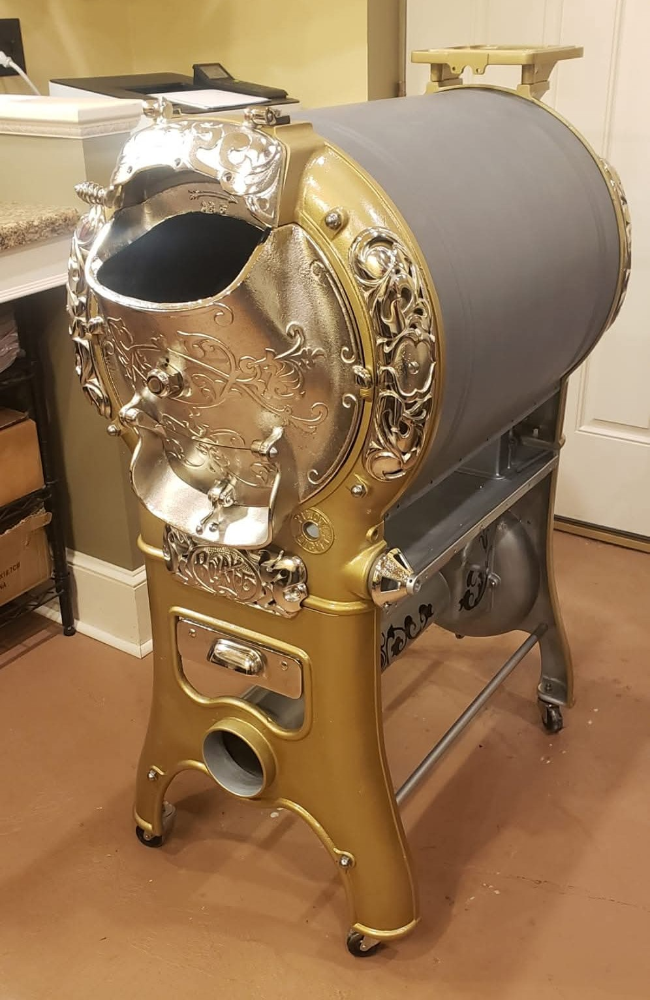
Overview
This is the second of my two Royal No. 5 roasters. The first is already up and running and roasts coffee regularly. This one is getting the full treatment so it can do the same.
It was in one piece when I bought it, but worn. I took it completely apart, sandblasted and repainted the castings, traced and recreated the original scroll stenciling, and had the ornate trim freshly nickel plated before putting everything back together.
- MachineRoyal No. 5 coffee roaster
- MakerA.J. Deer Co., Hornell, NY
- In the shop2 (the other is already roasting)
- StatusOngoing
- GoalRoast coffee with it
A Little History
Royal roasters were built by the A.J. Deer Company of New York. The company started out in Buffalo and later moved to Hornell, where it made a whole line of "Royal" brand store equipment: electric coffee mills, meat choppers and slicers, peanut butter machines, and coffee roasters.
Deer was known for selling its Royal coffee mills directly to store owners on an installment plan, starting around 1905, instead of going through hardware wholesalers. In 1909 the company bought the design of the Prims coffee roaster and brought it back to market as the Royal coffee roaster. It came in several sizes, including the No. 4 and No. 5, and was built to roast coffee right in the shop.
The A.J. Deer Company went bankrupt in early 1931, during the Great Depression, but plenty of its roasters outlived it. Restored Royals more than a century old are still roasting coffee today. I have two No. 5s: one is already in regular use roasting coffee, and this page follows the restoration of the second.
Sources: VintageMachinery.org, Ukers, All About Coffee (1922).
As Found & Teardown
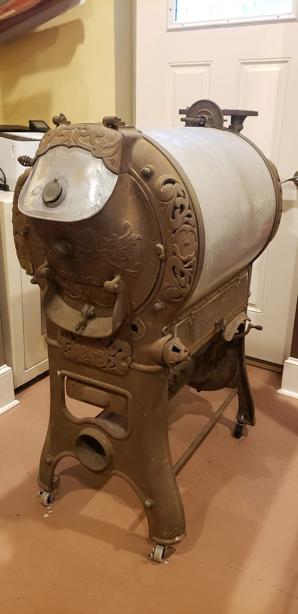
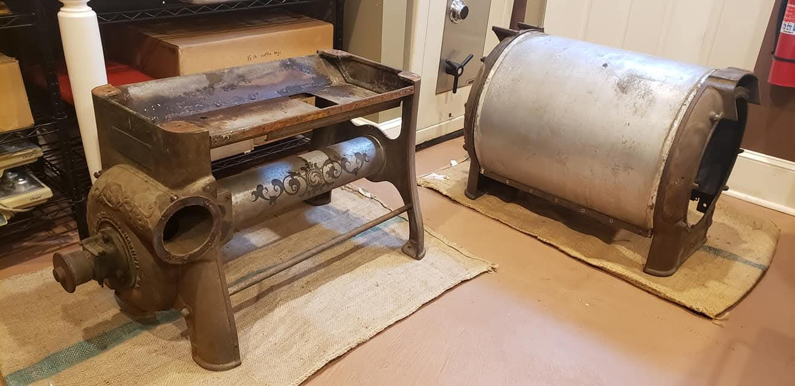
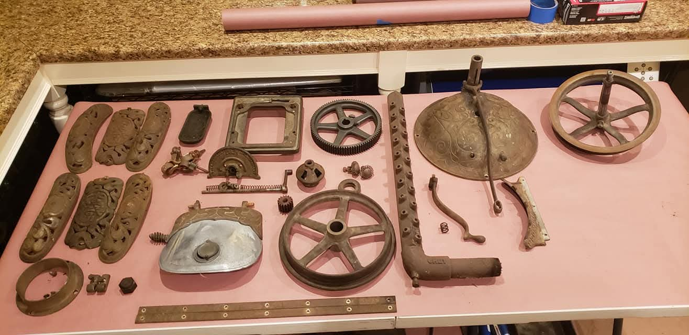
Paint
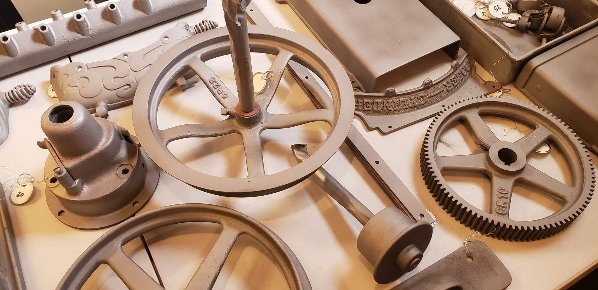
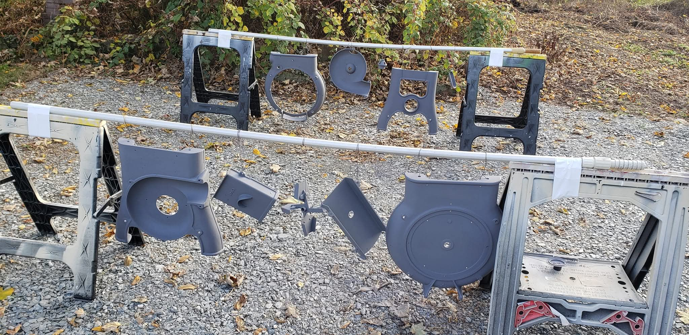
Stenciling
Tracing the original scrollwork so it could be recreated.
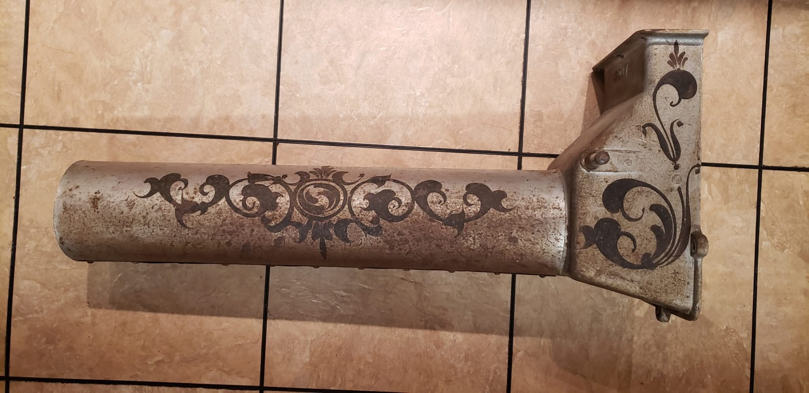
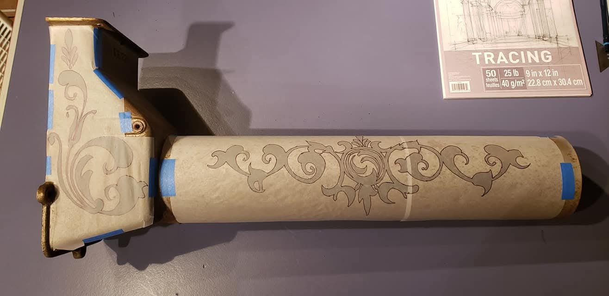
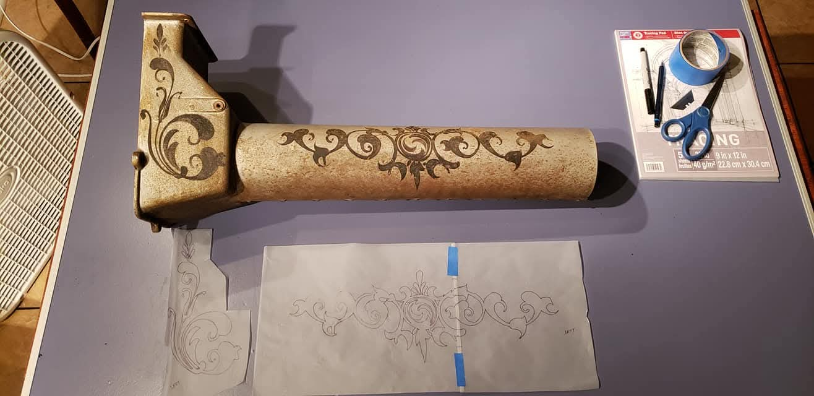
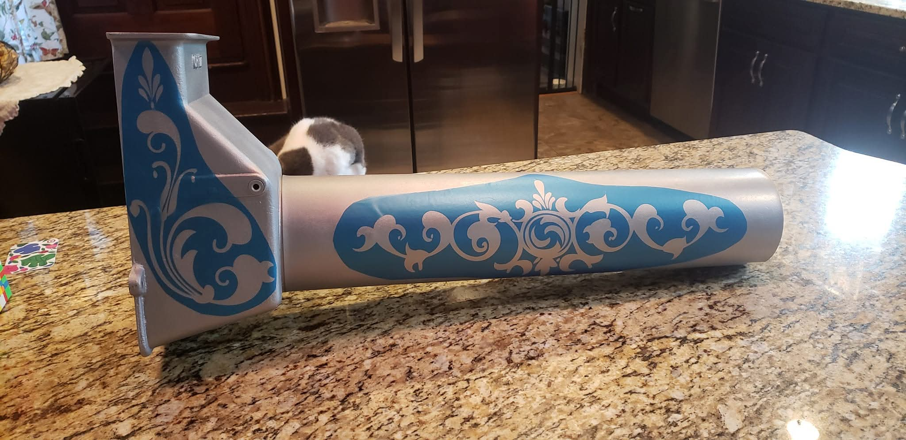
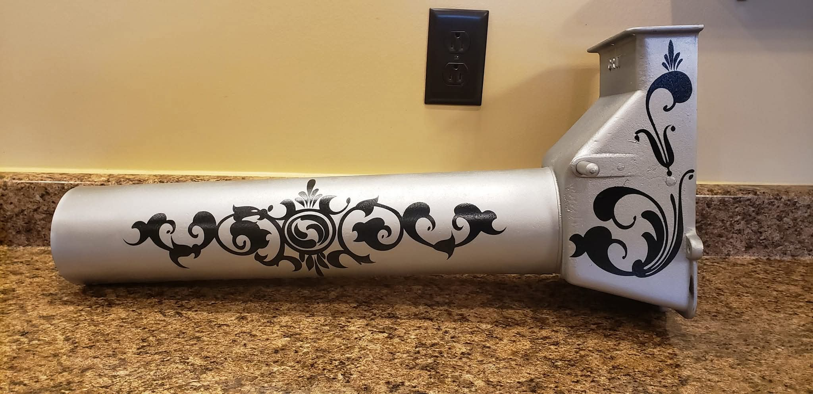
Nickel Trim
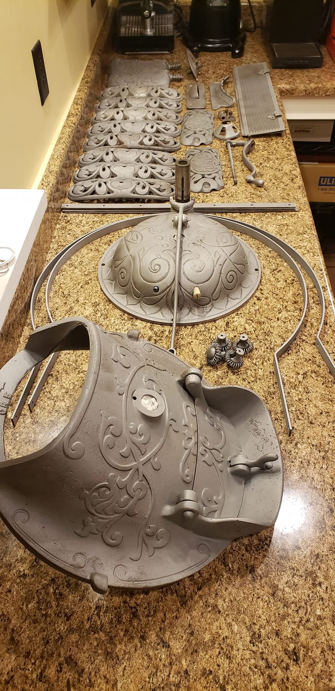
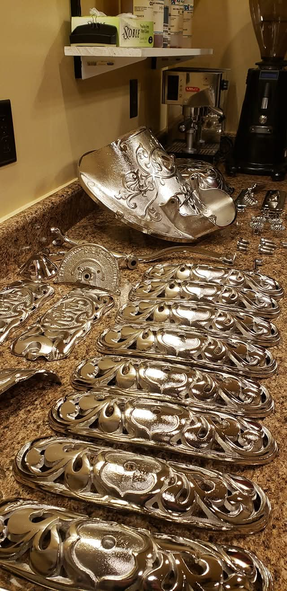
Reassembly
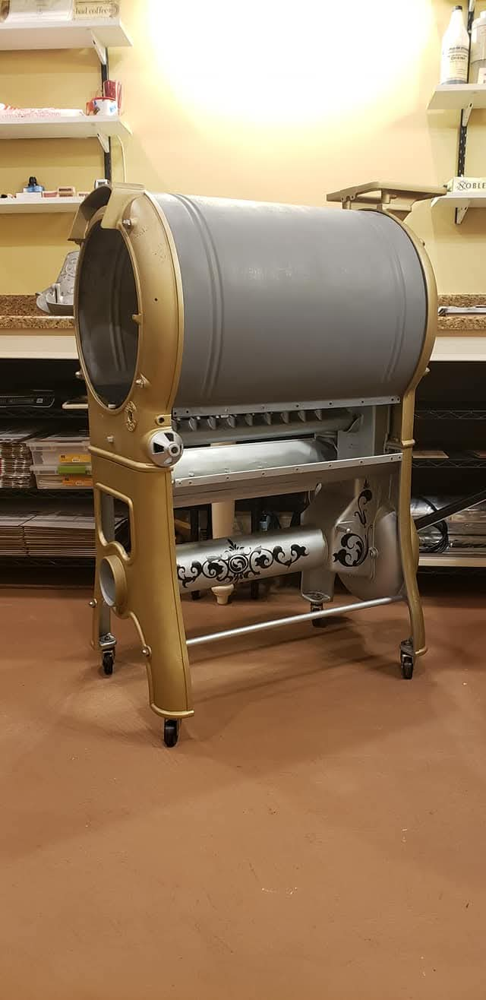
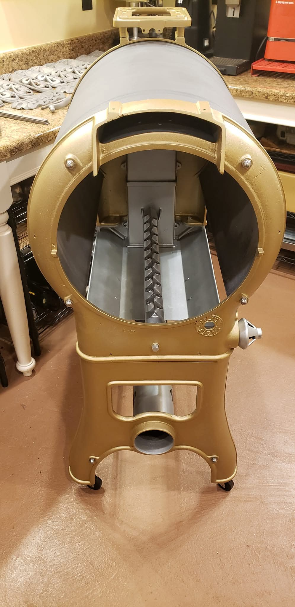
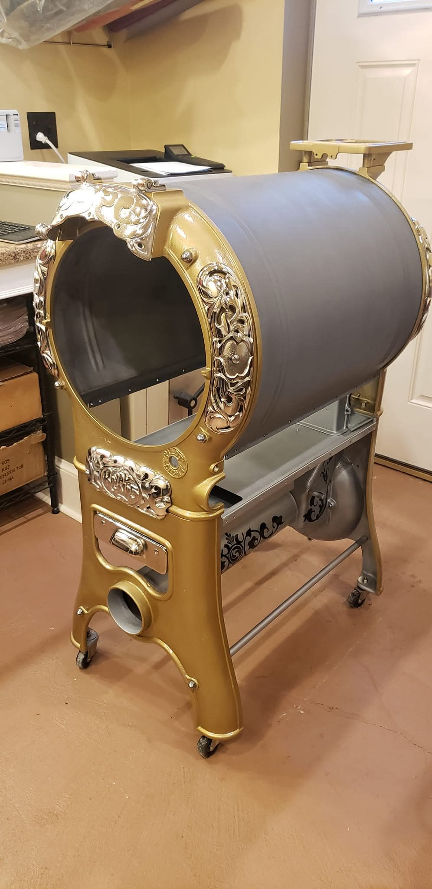
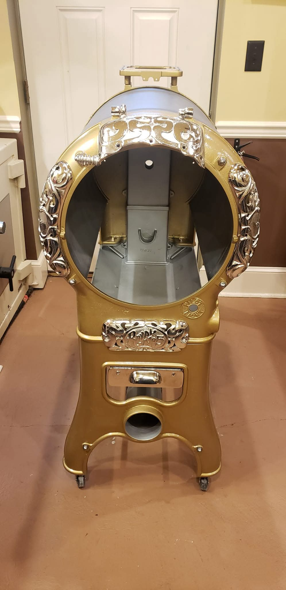
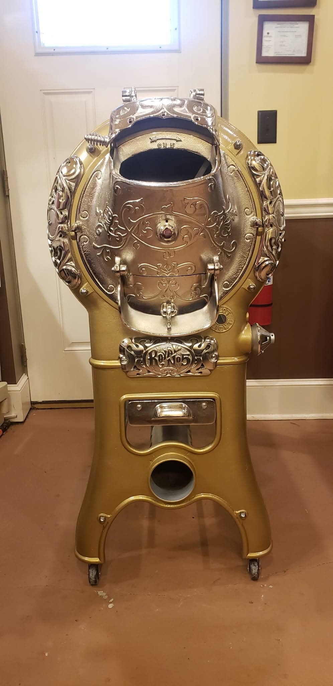
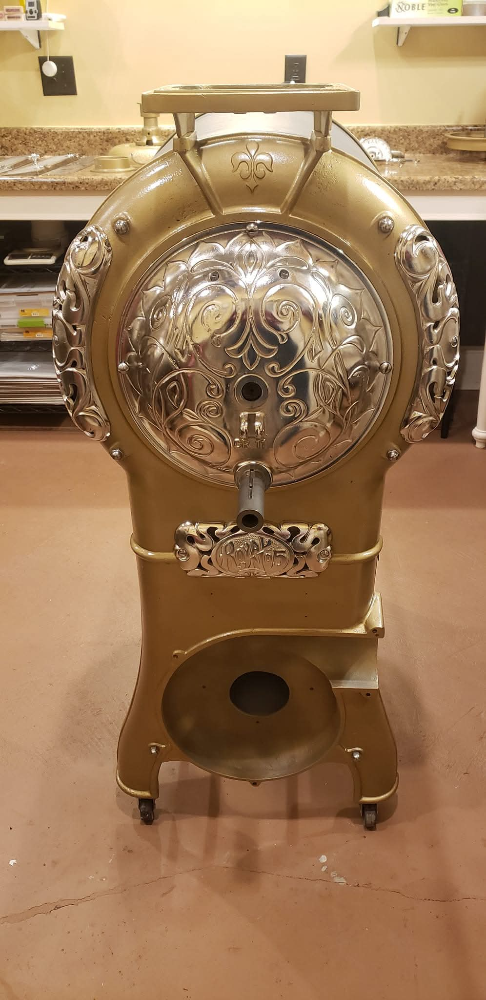
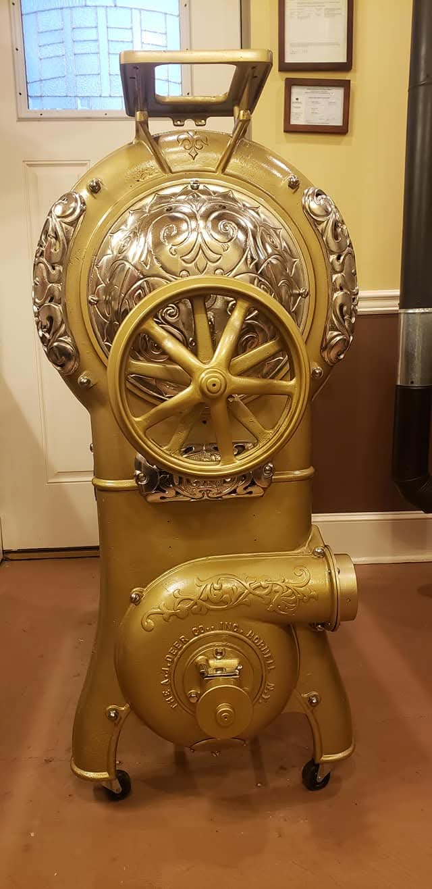
Build Log
Updates as the restoration moves along.
-
Project page started with photos from the restoration.